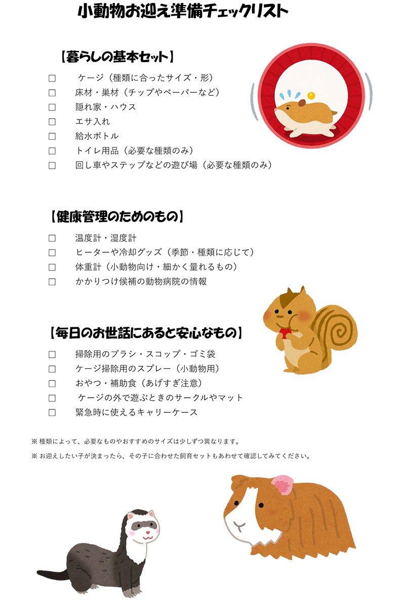

GUIDE
はじめてさんのための小動物お迎えガイド
「ちゃんとお世話できるかな？」「どの子が自分に合うんだろう？」
そんな不安をひとつずつ減らしていけるように、
お迎えまでの流れと、準備しておきたいことをまとめました。
お迎えまでの3つのステップ
自分の暮らしに合う種類を知る
ライフスタイルによって、向いている小動物は少しずつ変わります。
帰宅時間、部屋の広さ、騒音の有無（マンション・アパートなど）をふまえて、
「夜行性がいい」「たくさん触れ合いたい」など、譲れない条件を書き出してみましょう。
必要な飼育環境と道具をそろえる
小さな体でも、快適に暮らすためには「その子に合った環境づくり」が大切です。
ケージや床材、隠れ家、給水ボトルなど、基本セットをお迎え前に準備しておきましょう。
種類によって必要な温度や運動量も変わるので、事前にチェックしておくと安心です。
お迎え後の「ならし期間」を見守る
お迎え直後は、環境がガラリと変わってとても不安な時期です。
まずはそっと見守り、ケージの外から静かに声をかけるところから始めましょう。
少しずつごはんを手からあげたりしながら、お互いのペースで距離を縮めていけると理想的です。
お迎え前に準備しておきたいもの
種類によって細かい違いはありますが、どの小動物でも共通して「最初にそろえておきたいもの」の一例です。
下のチェックリストを参考にしながら、少しずつ準備してみてください。

あなたの暮らしに合う子を選ぶために
「かわいい」だけで選んでしまうと、お世話の量や生活リズムが合わずに
お互いに無理をしてしまうこともあります。選ぶときは、次のポイントも意識してみてください。
夜型の暮らしの人
夜に活動的になるハムスターやハリネズミなど、夜行性の子と相性が良いかもしれません。
夜中の回し車の音などが気にならない環境かどうかもチェックしておきましょう。
たくさん触れ合いたい人
ウサギやモルモット、デグーなど、スキンシップを楽しめる種類がおすすめです。
一方で「抱っこが苦手な子もいる」ことを理解して、その子のペースを大切にしてあげてください。
限られたスペースで暮らしている人
ケージのサイズが比較的小さめでも暮らしやすい種類や、上下の空間を活かせるレイアウトなど、
工夫次第で快適な環境は作れます。無理のない範囲で続けられる形を考えてみましょう。